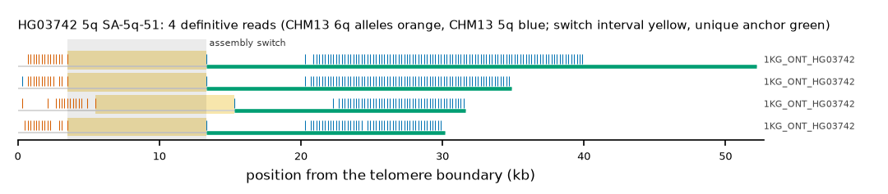

HG03742 5q: SA-5q-51
Claim HG03742|5q|SA-5q-51. All claims
- cohort
- 1000 Genomes ONT
- individual
- HG03742
- haplotype
- hap2
- arm
- 5q
- allele
- SA-5q-51 (within family)
- model
- donor CHM13 6q, proximal CHM13 5q, recipient CHM13 5q, pattern DP
- claimed end(s)
HG03742#2#JBHDXM010000002.1#R- assembly switch
- 10,743 bp from the telomere boundary; on CHM13 chr5:182025045; own-window projection 3500-13300 bp
- v1 verdict
- confirmed (confirmed)
- definitive tier
- definitive
- reads
- 4 conclusive switch-concordant, 0 discordant, 3 contradicting, 5 consistent; 4 definitive (1KG_ONT_HG03742)
- by tier
- definitive:4;consistent:5;contradicts:3
- source
- https://ftp.1000genomes.ebi.ac.uk/vol1/ftp/data_collections/1KG_ONT_VIENNA/t2t/HG03742.t2t.cram
- note
- confirmed:robust; keep

Conclusive and contradicting reads (7)
5 further reads are consistent (switch test passed, but no terminal telomere, anchor or integrity); they are
listed in reads.tsv.gz. Switch: 95% interval in subtelomere coordinates (kb from the
telomere boundary) and projected on CHM13 5q. Each samtools command prints the read's record
from its public file (CRAM: add the CHM13 v2.0 FASTA as -T).
| read | dataset | tier | length | switch (subtelomere, kb) | switch on CHM13 | donor units / purity | proximal units / purity | anchor (CHM13, MAPQ, unique) | own-assembly best end | fetch |
|---|---|---|---|---|---|---|---|---|---|---|
161689db-c7fa-4032-8011-dbf4d36a1b04 | 1KG_ONT_HG03742 | definitive | 54,155 | 3.5-13.3 | chr5:182022579-182032379 | 14 / 1.00 | 98 / 1.00 | chr5:181982865-182022578, 60, 39.7 kb | HG03742#2#JBHDXM010000002.1#R (97.8%) ✓ | samtoolssamtools view -F 0x900 -T chm13v2.0.fa.gz -X 'https://ftp.1000genomes.ebi.ac.uk/vol1/ftp/data_collections/1KG_ONT_VIENNA/t2t/HG03742.t2t.cram' 'https://ftp.1000genomes.ebi.ac.uk/vol1/ftp/data_collections/1KG_ONT_VIENNA/t2t/HG03742.t2t.cram.crai' 'chr5:182007876-182024538' | awk -v r='161689db-c7fa-4032-8011-dbf4d36a1b04' '$1==r' |
a5a005b6-add6-4995-bdf9-fd01501ee482 | 1KG_ONT_HG03742 | definitive | 37,512 | 3.5-13.3 | chr5:182022528-182032328 | 14 / 0.93 | 73 / 1.00 | chr5:182000125-182022528, 60, 22.4 kb | HG03742#2#JBHDXM010000002.1#R (96.5%) ✓ | samtoolssamtools view -F 0x900 -T chm13v2.0.fa.gz -X 'https://ftp.1000genomes.ebi.ac.uk/vol1/ftp/data_collections/1KG_ONT_VIENNA/t2t/HG03742.t2t.cram' 'https://ftp.1000genomes.ebi.ac.uk/vol1/ftp/data_collections/1KG_ONT_VIENNA/t2t/HG03742.t2t.cram.crai' 'chr5:182007876-182024538' | awk -v r='a5a005b6-add6-4995-bdf9-fd01501ee482' '$1==r' |
6973b914-ca1e-4829-af54-1c072db90b24 | 1KG_ONT_HG03742 | definitive | 32,043 | 5.5-15.3 | chr5:182022494-182032294 | 14 / 1.00 | 47 / 1.00 | chr5:182005384-182022494, 60, 17.1 kb | HG03742#2#JBHDXM010000002.1#R (95.7%) ✓ | samtoolssamtools view -F 0x900 -T chm13v2.0.fa.gz -X 'https://ftp.1000genomes.ebi.ac.uk/vol1/ftp/data_collections/1KG_ONT_VIENNA/t2t/HG03742.t2t.cram' 'https://ftp.1000genomes.ebi.ac.uk/vol1/ftp/data_collections/1KG_ONT_VIENNA/t2t/HG03742.t2t.cram.crai' 'chr5:182007876-182024538' | awk -v r='6973b914-ca1e-4829-af54-1c072db90b24' '$1==r' |
24d49ba8-f6f9-401e-b111-203a1d67daaa | 1KG_ONT_HG03742 | definitive | 32,935 | 3.5-13.3 | chr5:182022452-182032252 | 13 / 1.00 | 48 / 1.00 | chr5:182004885-182022451, 60, 17.6 kb | HG03742#2#JBHDXM010000002.1#R (96.3%) ✓ | samtoolssamtools view -F 0x900 -T chm13v2.0.fa.gz -X 'https://ftp.1000genomes.ebi.ac.uk/vol1/ftp/data_collections/1KG_ONT_VIENNA/t2t/HG03742.t2t.cram' 'https://ftp.1000genomes.ebi.ac.uk/vol1/ftp/data_collections/1KG_ONT_VIENNA/t2t/HG03742.t2t.cram.crai' 'chr6:172117616-172126628' | awk -v r='24d49ba8-f6f9-401e-b111-203a1d67daaa' '$1==r' |
c5b83af8-18f4-42f8-aed9-19dec18154ca | 1KG_ONT_HG03742 | contradicts | 50,831 | 0.1-0.3 | chr5:182043579-182043779 | 1 / 0.00 | 135 / 1.00 | chr5:181998459-182032947, 60, 26.5 kb | samtoolssamtools view -F 0x900 -T chm13v2.0.fa.gz -X 'https://ftp.1000genomes.ebi.ac.uk/vol1/ftp/data_collections/1KG_ONT_VIENNA/t2t/HG03742.t2t.cram' 'https://ftp.1000genomes.ebi.ac.uk/vol1/ftp/data_collections/1KG_ONT_VIENNA/t2t/HG03742.t2t.cram.crai' 'chr5:182036594-182045439' | awk -v r='c5b83af8-18f4-42f8-aed9-19dec18154ca' '$1==r' | |
bfa11a4e-0e41-4cf6-8f46-950a7fb513ff | 1KG_ONT_HG03742 | contradicts | 35,946 | 0.1-1.3 | chr5:182042819-182044019 | 1 / 0.00 | 73 / 0.97 | chr5:182009809-182033372, 60, 15.1 kb | samtoolssamtools view -F 0x900 -T chm13v2.0.fa.gz -X 'https://ftp.1000genomes.ebi.ac.uk/vol1/ftp/data_collections/1KG_ONT_VIENNA/t2t/HG03742.t2t.cram' 'https://ftp.1000genomes.ebi.ac.uk/vol1/ftp/data_collections/1KG_ONT_VIENNA/t2t/HG03742.t2t.cram.crai' 'chr5:182036594-182045439' | awk -v r='bfa11a4e-0e41-4cf6-8f46-950a7fb513ff' '$1==r' | |
be1b328d-dc74-482b-9a74-5f79a483a367 | 1KG_ONT_HG03742 | contradicts | 23,594 | 0.1-1.5 | chr5:182042664-182044064 | 1 / 0.00 | 52 / 0.96 | chr5:182023175-182033530, 60, 1.8 kb | samtoolssamtools view -F 0x900 -T chm13v2.0.fa.gz -X 'https://ftp.1000genomes.ebi.ac.uk/vol1/ftp/data_collections/1KG_ONT_VIENNA/t2t/HG03742.t2t.cram' 'https://ftp.1000genomes.ebi.ac.uk/vol1/ftp/data_collections/1KG_ONT_VIENNA/t2t/HG03742.t2t.cram.crai' 'chr5:182036594-182045439' | awk -v r='be1b328d-dc74-482b-9a74-5f79a483a367' '$1==r' |
Files
CRAM/BAM on CHM13 v2.0, BAM on the person's own assembly windows and the window FASTA: release asset subtel_read_evidence_v1_1KG_ONT.tar.gz, directory read_evidence_v1/1KG_ONT/HG03742__5q__SA-5q-51/ (downloads).
Re-derive this verdict
git clone https://github.com/jlanej/human-subtelomere-atlas && cd human-subtelomere-atlas
evidence/replicate_claim.sh 'HG03742|5q|SA-5q-51'The script fetches the cited reads from the public source by region and read ID, re-runs the frozen criteria and compares every per-read and claim verdict with this page (details).